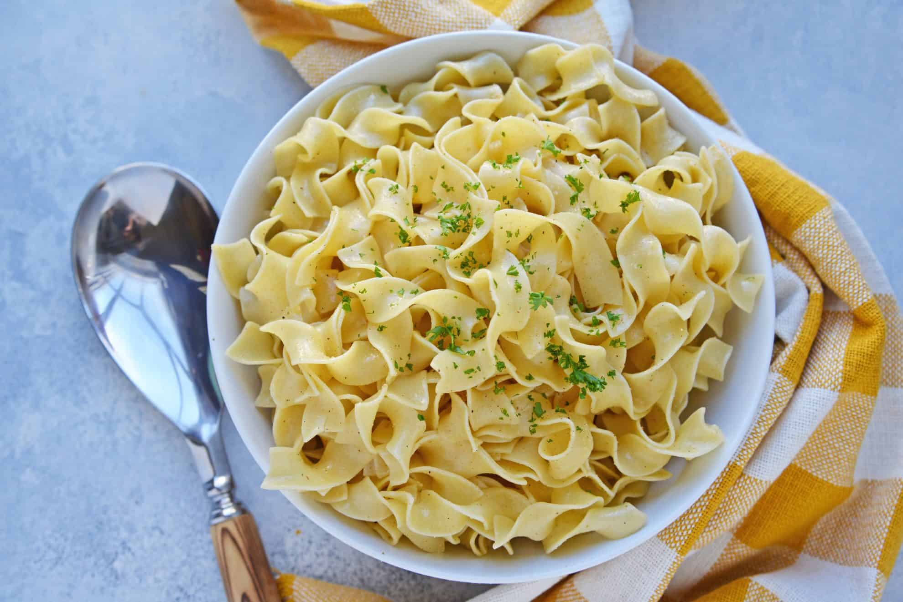

Description
This week, we're dipping in the world of Dan Harmon's lovable, irreverent collegiate caricature: Community. I'm here to defend the "weird" favorite food of Abed Nadir: buttered noodles. Yes, that impossibly plain side dish/cafeteria filler/thing you eat when you're sick. With a few simple tricks, we can upgrade this ubiquitous underdog into something worth making all on its own.